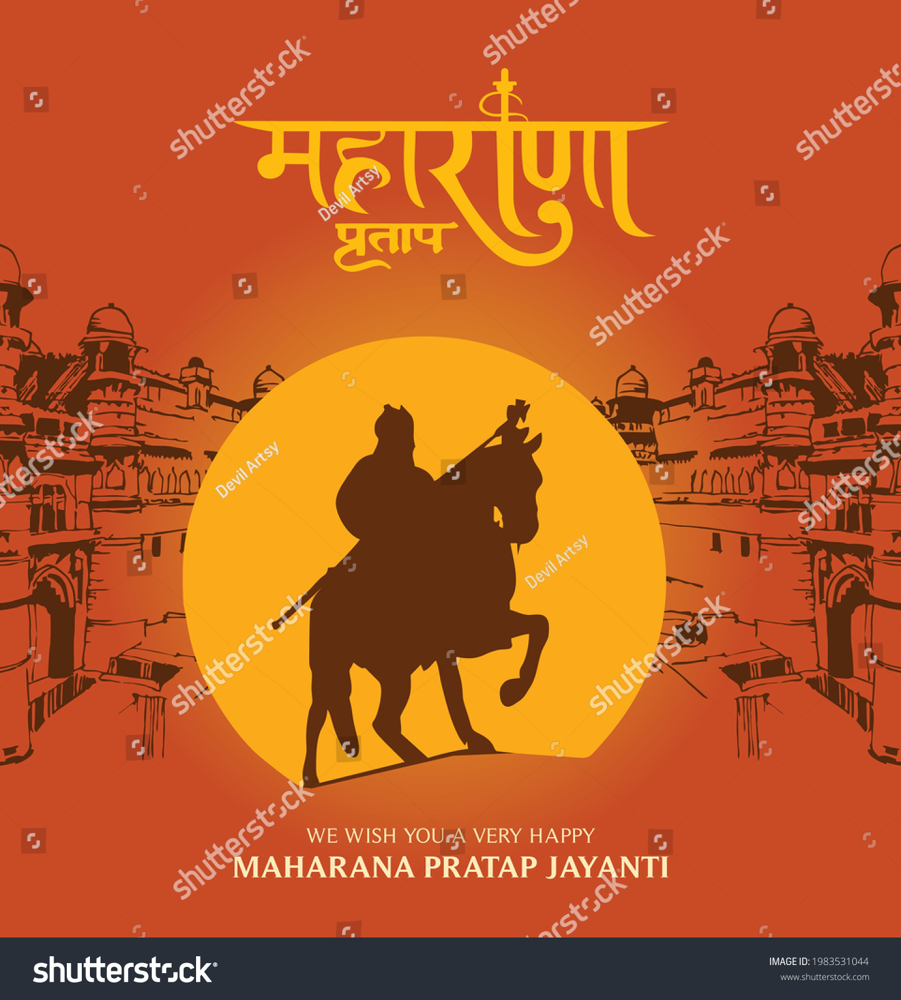

The narrative begins with Maharana Pratap's early life, detailing his birth into the illustrious Sisodia clan and the cultural backdrop of Rajasthan. Hooja meticulously
explores the socio-political landscape of the time, emphasizing the challenges faced by Maharana Pratap as he ascended to the throne after the death of his father, Udai Singh II.
Key events in the biography include:
The Battle of Haldighati: This pivotal battle against the Mughal forces led by Akbar is a focal point of the book. Maharana Pratap's guerrilla warfare tactics and strategic
use of Mewar's rugged terrain are highlighted as he fiercely defends his kingdom despite being outnumbered.
Resistance and Resilience: The book illustrates Pratap's unwavering resolve to maintain Mewar's sovereignty and cultural heritage. His leadership is characterized by fairness
and a deep commitment to his subjects, fostering unity and resilience among his people.
Legacy and Influence: Hooja discusses how Maharana Pratap's legacy transcended his lifetime, inspiring future generations and becoming a symbol of bravery and resistance against
oppression. His life story serves as a powerful reminder of the importance of courage and integrity in the face of overwhelming odds.
Through a blend of historical rigor and engaging prose, Maharana Pratap invites readers to appreciate the valor and leadership of this iconic figure in Indian history. The book
not only recounts his military exploits but also delves into his personal life, governance, and the cultural ethos of the time, making
it a comprehensive tribute to a legendary king whose tales of grit and glory continue to inspire.